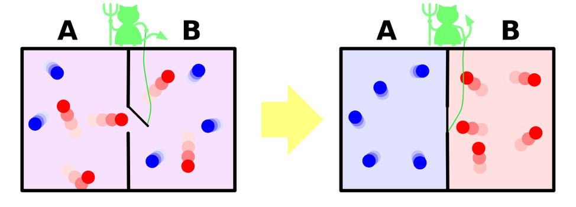

你好，欢迎来到我的《信息论40讲》。
我在课程《科技史纲60讲》和《全球科技通史》这本书中用能量和信息两条主线来解释近万年的人类科技成就，有读者问，信息和能量之间是否有十分明确的、本质的联系呢？
其实是有的，我们今天就从物理学假说开始，说说它们的联系，这个假说被称为“麦克斯韦的妖（Maxwell's demon）”。
麦克斯韦大家并不陌生，他可能是牛顿之后，爱因斯坦之前最重要的物理学家，他奠定了电磁学的基础，而且正是因为麦克斯韦电动力学的方程和经典力学的矛盾，才导致了爱因斯坦提出相对论。
在麦克斯韦生活的年代，物理学上发生了一件大事，就是卡诺、克劳修斯和开尔文爵士发现了热力学第二定律。通常我们用的是克劳修斯的描述，“不可能把热量从低温物体传递到高温物体而不产生其他影响”。也就是说，你不可能把冰和热水放在一起让冰变冷而热水变热。
我们今天知道所谓温度高，无非是分子运动快的表象，而温度低则相反。
那么现在如果有个隔断的容器，左边有热空气，右边有冷空气，这种情况被称为相对有序的状态，因为热空气里都是速度快的分子，都到了左边，冷空气里都是速度慢的分子，在右边。
如果这个容器是相连通的，中间有个门，我们把门打开，速度快的热空气分子就要进入到右边，而速度慢的也会进入左边，最后由于空气分子的碰撞，两边的空气分子运动速度差不多快，有序就变成了无序。
于是，克劳修斯就发明了熵这个概念来形容分子运动的无序状态，从有序到无序，是一个不断熵增的过程。
在冷热空气分开时，它们是有序的，熵比较低，合二为一后，它们变得无序，熵达到最大值。克劳修斯讲，在一个封闭的系统中，永远是朝着熵增加的方向变化的，也就是说分子运动的不确定性越来越大。
热力学第二定律不仅告诉我们热机做功的效率会很有限，而且预示了一个非常沮丧的结果，那就是宇宙最终所有地方的温度都会趋同，这就是所谓的“热寂说”。
热寂说想起来就很可怕，未来的宇宙会是死气沉沉的。因此，物理学家从内心里很恐惧热寂说，于是就有人在琢磨，能否有个方式，让熵增加的过程逆转呢？
于是麦克斯韦就假想了一种情形。当两个联通的容器中冷、热空气混合，也就是熵比较大时，他在两个联通的容器之间安排了一个妖怪把门，这个妖怪能探测并控制单个分子的运动。
如果它看到一个速度快的分子从右往左运动，它就让它过去，同样，如果它看到一个慢分子从左往右运动，它也让它过去。但是反过来，它会严格把门，不让分子经过。

那么如果有这样一个妖怪存在，经过一段时间，左边的分子速度越来越快，温度就升高了，右边的分子速度越来越慢，温度就降低了。这样它让原本熵最大的冷热空气混合的无序状态，扭转为有序状态了。
再往后，由于一个容器温度高，另一个温度低，就可以利用温差驱动热机做功了，然后再让妖怪重复熵减的过程，如此循环。这样就造出了一个（第二类）永动机。
麦克斯韦假想的这种情形显然在现实中发生不了，但怎样才能从理论上证明这样一个妖怪不可能存在，却不是一件容易的事情。
我们回想一下麦克斯韦的妖怪工作的过程，它需要先测量分子运动的速度，也就是说需要获取信息，它需要不断的信息输入才能降低热力学上的熵。我们知道信息的输入可以降低一个黑盒子里的信息熵，现在它也可以降低热力学上的熵。
但是，这时麦克斯韦所假定的两个容器，本身已经不再是封闭系统了。也就是说，麦克斯韦想象的系统并非克劳修斯总结热力学第二定律所说的系统。这样麦克斯韦的妖和热力学第二定律就不矛盾了。
接下来的问题是，测量分子运动速度这件事是否需要能量，或者更广义地说，在物理上，测量这件事是否需要能量？答案也是肯定的。我们知道在物理学里有一个测不准原理，也就是说我们“观察”这个动作本身是会改变物质状态的。
霍金在《大设计》一书中介绍这个原理时讲，在微观世界里，当我们测量时，哪怕两个光子照在原子上，它的状态都会改变。也就是说，信息的获取本身需要能量。
也就是说，这个（第二类）永动机确实没有直接消耗什么能量，但是它消耗的是信息，麦克斯韦的妖把信息转化成了能量，或者说通过提高信息熵，降低了热力学的熵。这样算下来，总的熵并没有减少。
这里顺带说一句，在信息科学中也有一个类似于测不准原理的不确定原理，也就是说频率的误差和时域的误差不可能同时变小，这和物理学是一致的。
接下来我们来讲讲热力学第二定律和麦克斯韦的妖同信息时代管理的关系。
在信息时代，你会发现一个现象，一个开放的、包容多元文化的社会，容易催生出伟大的公司。而一个封闭保守的地区，发展就缓慢。
这个现象很好解释。根据热力学第二定律，一个封闭的系统永远朝着熵增加（也就是越来越无序）的方向发展，一定会越变越糟糕。而要扭转这种局面，唯一的办法就是从外界引入负熵。
比如你可以用空调机将炎热的室外变得更热，让凉爽的室内更凉爽，这是因为空调机消耗了能量，也就是引入了负熵。这时候，你的房间内外其实不再是一个封闭系统，而是一个开放的系统，它和远处的发电站连为一体。
对于一个地区、一个组织也是如此。它只有成为一个开放的系统，会引入负熵，才有可能让系统通过与外界的交换变得更加有序，也就是朝着越来越好的方向发展。
世界上最有经济活力的地区可能要数硅谷地区了，它成功的一个重要原因，就是因为它自身是一个开放的系统，不断地从世界各地引入新的人才，不断地丰富本已很多元的文化，才能在整体上蒸蒸日上。
在过去的十多年里硅谷地区每年和世界各国进行人才交换，净流入1.7万～1.8万人，这些人大多是思想活跃的年轻的专业人士。他们实际上是给硅谷带来了负熵。类似的，中国最开放而包容的城市是深圳，其次可能是浦东或者长三角的一些城市。
相反，一个封闭的社会，如果闭门造车，最终那里的人会变得同质化，整个环境就会变得死气沉沉。我一直非常强调工作地点，反对年轻人贪图安逸，跑到生活成本低的三四线城市去，因为那些地方是相对封闭的系统。
一个地区也好，机构也罢，从外面引入负熵有两种办法，一种是直接与外界进行人的交换，另一种则是接受外面新的思想。前者可以被看成是引入负的能量熵，后者则是引入负的信息熵。
日本明治维新时，在很大程度上是采取后一种做法，即把西方的思想全面引入日本。对于一个机构也一样，既可以通过对外进行合作引入负熵，也可以直接引入外界的技术和管理思想，这方面很好的一个例子就是华为。
1994年华为开发出了当时具有国际先进水平的C&C08程控交换机，并且经过努力获得邮电部的认可之后，从此它的产品在中国市场上站住了脚。但是，如果华为还是按照习惯性的管理方法来管理公司，它就会和国内大部分IT企业一样，成为一个“窝里横”的公司。
1998年，华为迈出了成为后来国际化大企业关键的一步，任正非决定从IBM聘请大批顾问，将公司打造成合乎信息时代做事规范的国际化企业。
当时华为很多高管对IBM开出的高价目瞪口呆，怀疑那些钱花得不值，但是任正非力排众议，接受了IBM的报价，然后开始了一场长达数年的全面学习IBM管理的变革运动。
和一般中国企业聘请一些外国成功企业，或者咨询公司为自己把脉、找问题、给出解决方案、改进管理所不同的是，华为在这个改造期间，很多部门是由IBM的顾问直接担任负责人，华为的干部则为他们担任助手，向前者学习。通过这样手把手的传授，华为最终在管理水平，特别是研发管理上，成功达到了世界一流的水平。
在这个过程中，华为得到的是什么？你可以说是先进的管理经验，但是从本质上讲是负熵。
对于个人来讲，什么算是引入负熵呢？那就是行万里路，读万卷书。这两句话当然是比喻，第一件事是指自己走出去和别人接触，我把它等同于在能量上引入负熵。第二件事是指接受新的信息，引入负的信息熵。
我有时听一些朋友讲，我太忙，没时间走出去，没时间学习，或者我太内向，不善于和别人打交道。对此我想说的是，每个人都有自己的困难，但是世界自有安排，不会因为谁困难就照顾谁。不管什么原因，一个人一旦封闭起来，他就离无序的状态不远了。
我们介绍了热力学第二定律，并且通过介绍麦克斯韦的妖讲述了信息和能量二者的关系。我们还通过物理学的测不准原理和信息科学中的不确定原理，说明了二者的相关性。
任何一个封闭系统都是越变越无序的，要想变得有序，就要引入负熵，即能量和信息。对地区，对企业都是如此。
对人来讲，引入负熵的方法就是行万里路，读万卷书。
思考题：能否想两个例子，一个是用能量换信息，一个是用信息换能量。
预告：下一讲，我们就来复盘一下这一模块“信息应用”的内容。